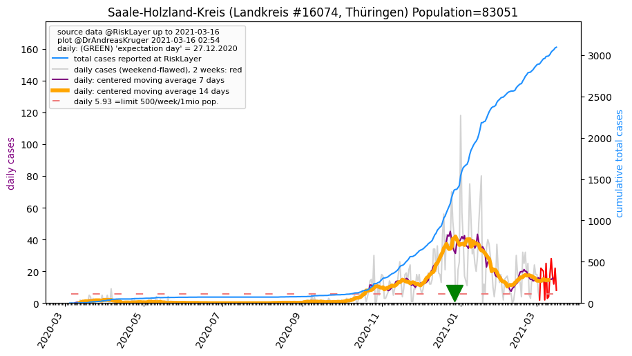
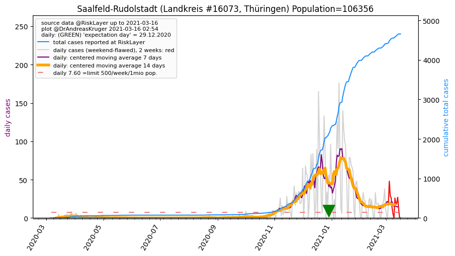
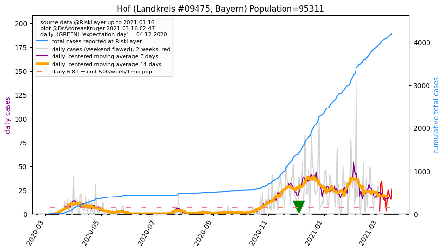
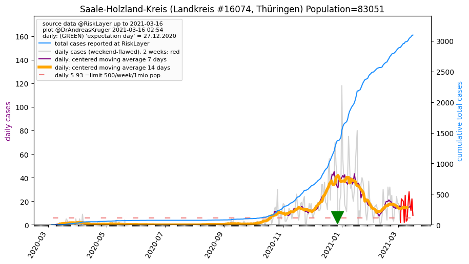
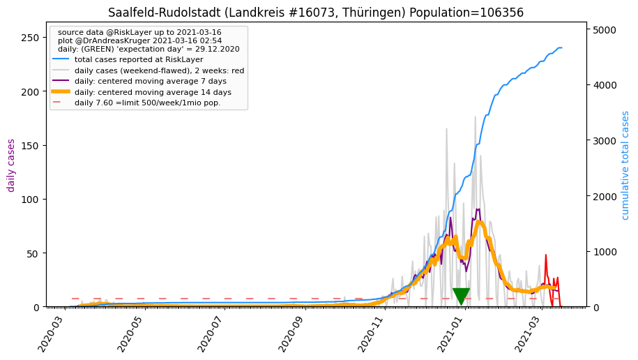
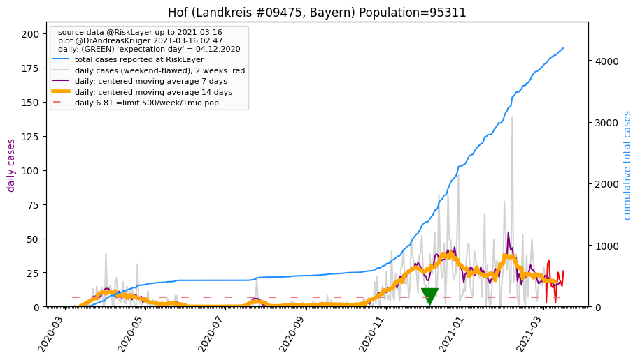

")
")

")
")
")
")
")
")
")
")


")
")
")
")
")
")
| Greiz_LK (0.0 km) |
Gera_KS (16.2 km) |
Saale-Holzland-Kreis_LK (29.7 km)  |
Saale-Orla-Kreis_LK (31.8 km) |
| Zwickau_LK (31.9 km) |
Altenburger Land_LK (32.5 km) |
Vogtlandkreis_LK (34.4 km) |
Jena_KS (39.5 km) |
| Burgenlandkreis_LK (46.3 km) |
Hof_KS (50.3 km) |
Weimarer Land_LK (55.2 km) |
Saalfeld-Rudolstadt_LK (55.4 km)  |
| Hof_LK (55.9 km)  |
Weimar_KS (59.1 km) |
Chemnitz_KS (59.7 km) |
Erzgebirgskreis_LK (63.5 km) |
| Leipzig_LK (64.3 km) |
Kronach_LK (68.3 km) |
Leipzig_KS (69.3 km) |
Beware that this is a temporary and experimental page - it might get removed, so please do not link to it. Instead link to project http://tiny.cc/cov19de.